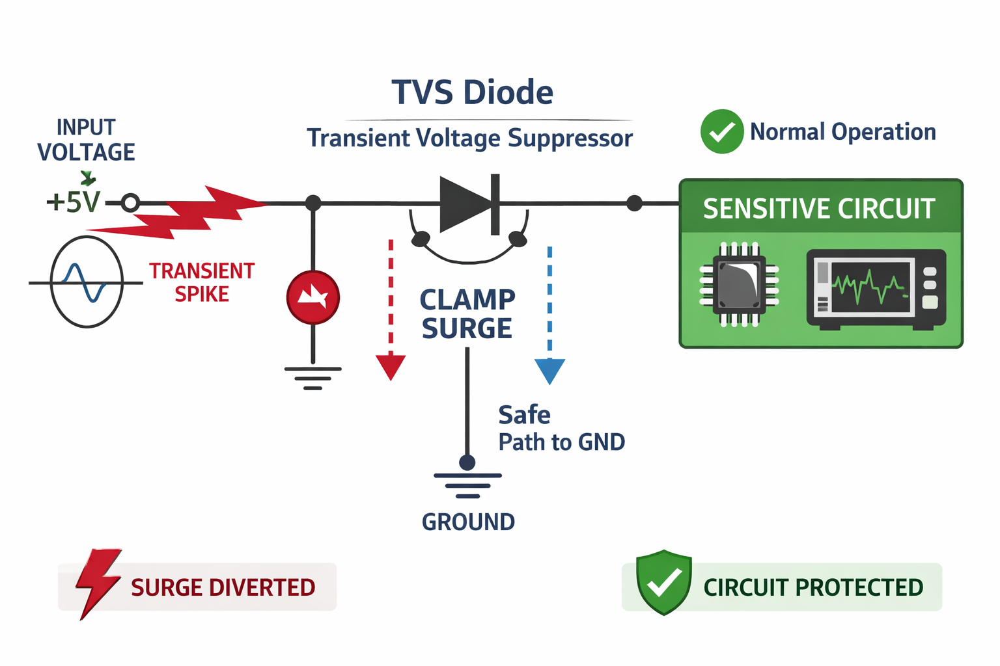

Critical Area Analysis (CAA) is a yield modeling technique used to quantify the layout area where a defect can cause a circuit failure (short or open).
Larger critical area leads to lower yield.
Morphological Dilation expands a polygon outward by a defined distance r.
A TVS diode protects sensitive circuits from transient voltage spikes by clamping excessive voltage and diverting surge current to ground.
During normal operation, the TVS remains off. When a transient spike occurs, it rapidly conducts and clamps the voltage.
